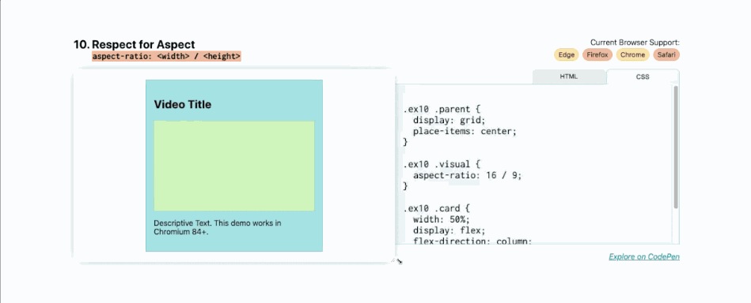

对于我们的第一个“单行”布局，让我们解决 CSS 中最大的谜团：居中。我想让你知道，使用 place-items: center 比你想象的更容易。
首先，指定 grid 作为显示方式，然后，在同一个元素上写上 place-items: center 。place-items 是同时设置 align-items 和 justify-items 的快速方法。通过将其设置为居中，align-items 和 justify-items 都将设置为居中。
.parent {
display: grid;
place-items: center;
}
这使得内容可以在父级中完美居中，无论内部大小如何。
flex: <grow> <shrink> <baseWidth>这是营销网站的常见布局，例如，可能有一行 3 个项目，通常带有图像、标题，然后是一些描述产品某些功能的文本。在移动设备上，我们希望它们能够很好地堆叠并随着屏幕尺寸的增加而缩放。
通过使用 Flexbox 来实现这种效果，当屏幕尺寸变化时，你不需要使用媒体查询来调整这些元素的位置。
flex 的缩写：flex: <flex-grow> <flex-shrink> <flex-basis> 。
因此，如果您希望框填充到其 <flex-basis> 大小，缩小到较小的尺寸，但不拉伸以填充任何额外空间，请编写：flex: 0 1 <flex-basis> 。在这种情况下，你的 <flex-basis> 是 150px，所以它应该看起来像这样：
.parent {
display: flex;
}
.child {
flex: 0 1 150px;
}
如果您确实希望框在换行到下一行时拉伸并填充空间，请将 <flex-grow> 设置为 1，因此，它应该如下所示：
.parent {
display: flex;
}
.child {
flex: 1 1 150px;
}
现在，当您增大或减小屏幕尺寸时，这些弹性项目会缩小和增大。
grid-template-columns: minmax( <min>, <max>) …)该演示利用 minmax 函数进行网格布局。我们在这里所做的是将最小侧边栏尺寸设置为 150px，但在较大的屏幕上，让它拉伸 25%。侧边栏将始终占据其父级水平空间的 25%，直到 25% 变得小于 150px。
添加以下值作为 grid-template-columns 的值：minmax(150px, 25%) 1fr 。第一列中的项目（在本例中为侧边栏）的 minmax 为 150px（占 25%），第二列中的项目（此处为主要部分）作为单个 1fr 轨道占据剩余空间。
.parent {
display: grid;
grid-template-columns: minmax(150px, 25%) 1fr;
}
grid-template-rows: auto 1fr auto与 Deconstructed Pancake 不同，此示例在屏幕尺寸更改时不包含其子元素。
这种布局通常称为粘性页脚，通常用于网站和应用程序、跨多个移动应用程序（页脚通常是工具栏）和网站（单页应用程序通常使用这种全局布局）。
将 display: grid 添加到组件将为您提供单列网格，但主要区域的高度仅与页脚下方的内容一样高。
要使页脚粘在底部，请添加：
.parent {
display: grid;
grid-template-rows: auto 1fr auto;
}
1fr 页眉和页脚内容设置为自动采用其子级的大小并将剩余空间（1fr）应用于主区域，而自动调整大小的行将采用其子级最小内容的大小，以便内容大小增加，行自身会调整。
grid-template: auto 1fr auto / auto 1fr auto对于经典的圣杯布局，有页眉、页脚、左侧边栏、右侧边栏和主要内容。与之前的布局类似，但现在带有侧边栏！
要在一行代码中编写整个网格，请使用 grid-template 属性。这允许您同时设置行和列。
属性和值对是：grid-template: auto 1fr auto / auto 1fr auto 。第一个和第二个空格分隔列表之间的斜杠是行和列之间的分隔符。
.parent {
display: grid;
grid-template: auto 1fr auto / auto 1fr auto;
}
与前面的示例一样，页眉和页脚具有自动调整大小的内容，这里左侧边栏和右侧边栏根据其子项的固有大小自动调整大小。但是，这次尺寸是水平（宽度）而不是垂直（高度）。
grid-template-columns：repeat(12, 1fr)接下来我们有另一个经典的布局：12 跨网格。您可以使用 repeat() 函数在 CSS 中快速编写网格。使用重复 (12, 1fr) 在网格模板列上，每个 1fr 将为您提供 12 列。
.parent {
display: grid;
grid-template-columns: repeat(12, 1fr);
}
.child-span-12 {
grid-column: 1 / 13;
}
现在您已经有了 12 列的轨道网格，我们可以将子项放置在网格上。一种方法是使用网格线来放置它们。例如，grid-column: 1 / 13 将从第一行到最后一行（第 13 行）跨越 12 列。网格列：1 / 5 将跨越前四列。
另一种方法是使用 span 关键字。使用跨度，您可以设置一条起始线，然后，设置从该起始点跨越的列数。
在这种情况下， grid-column: 1 / span 12 将相当于 grid-column: 1 / 13 ，而 grid-column: 2 / span 6 将相当于 grid-column: 2 / 8 。
.child-span-12 {
grid-column: 1 / span 12;
}
grid-template-columns(auto-fit, minmax( <base>, 1fr))对于第七个示例，结合您已经知道的一些概念来创建具有自动放置和灵活子项的响应式布局。漂亮又整洁。
这里要记住的关键点是 repeat、auto-(fit|fill) 和 minmax()，记住它们的缩写 RAM。
简而言之，应该是这样的：
.parent {
display: grid;
grid-template-columns: repeat(auto-fit, minmax(150px, 1fr));
}
您再次使用重复，但这次使用 auto-fit 关键字而不是显式数值。这会自动放置这些子元素。
这些子元素的基本最小尺寸是 150px，最大尺寸是 1fr，这意味着在较小的屏幕上它们将占据整个 1fr 宽度，当它们达到 150px 宽度时，它们将开始流到同一行。
使用自动调整功能，当水平尺寸超过 150 像素时，框将拉伸以填充整个剩余空间。但是，如果将其更改为自动填充，则当超过 minmax 函数中的基本尺寸时，它们将不会拉伸：
.parent {
display: grid;
grid-template-columns: repeat(auto-fill, minmax(150px, 1fr));
}
justify-content: space- Between对于下一个布局，这里主要要注意的是 justify-content: space- Between ，它将第一个和最后一个子元素放置在其边界框的边缘，剩余空间均匀分布在元素之间。
对于这些卡片，它们被放置在 Flexbox 显示模式下，使用 flex-direction:column 将方向设置为 column。
这会将标题、描述和图像块放置在父卡内的垂直列中。然后，应用 justify-content: space- Between 将第一个（标题）和最后一个（图像块）元素锚定到弹性盒的边缘，它们之间的描述性文本与每个端点之间的间距相等。
.parent {
display: flex;
flex-direction: column;
justify-content: space-between;
}
clamp( <min>, <actual>, <max>)在这里，我们介绍一些仅被少数浏览器支持，但对布局和响应式 UI 设计具有非常令人兴奋的效果的技术。在本演示中，您将使用钳制工具来设置宽度，如下所示：width:clamp(<min>,<actual>,<max>)。
这将设置绝对最小和最大尺寸以及实际尺寸。有了这些值，它应该看起来像这样：
.parent {
width: clamp(23ch, 60%, 46ch);
}
这里的最小大小是 23ch 或 23 个字符单元，最大大小是 46ch 或 46 个字符。字符宽度单位基于元素的字体大小（特别是 0 字形的宽度）。“实际”大小是 50%，表示该元素父元素宽度的 50%。
在这里，clamp() 函数的作用是保持元素 50% 宽，直到 50% 大于 46ch（在较宽的视口上）或小于 23ch（在较小的视口上）。
您可以看到，当我拉伸和收缩父尺寸时，该卡的宽度增加到其最大限制点并减少到其最小限制点。
然后它会保持在父级的中心，因为我们应用了其他属性来使其居中。这样可以实现更清晰的布局，因为文本不会太宽（超过 46ch）或太窄（小于 23ch）。
这也是实现响应式排版的好方法。例如，您可以编写：font-size: Clip(1.5rem, 20vw, 3rem) 。在这种情况下，标题的字体大小将始终保持在 1.5rem 和 3rem 之间，但会根据实际的 20vw 值增大和缩小以适应视口的宽度。
这是一种很好的技术，可以确保最小和最大尺寸值的可读性，但请记住，并非所有现代浏览器都支持它，因此请确保您有后备措施并进行测试。
aspect-ratio: <width> / <height>
最后一个布局工具是最具实验性的。它最近在 Chromium 84 中被引入到 Chrome Canary 中，Firefox 正在积极努力实现这一目标，但目前还没有任何稳定版本的浏览器。
不过，我确实想提一下这一点，因为这是一个经常出现的问题。这只是保持图像的纵横比。
使用纵横比属性，当我调整卡片大小时，绿色视觉块保持 16 x 9 纵横比。我们通过纵横比维持这个纵横比：16 / 9。
.video {
aspect-ratio: 16 / 9;
}
要在没有此属性的情况下保持 16 x 9 的宽高比，您需要使用 padding-top hack 并为其指定 56.25% 的填充来设置顶部与宽度的比率。
我们很快就会拥有避免黑客攻击和计算百分比的需要的属性。
您可以使用 1 / 1 的比例来制作正方形，使用 2 / 1 的比例来制作 2:1 的比例。可以设置任意图像缩放比例。
.square {
aspect-ratio: 1 / 1;
}
虽然此功能仍在开发中，但值得了解，因为它解决了许多开发人员面临的冲突，而且我自己也遇到过很多次，特别是在视频和 iframe 方面。